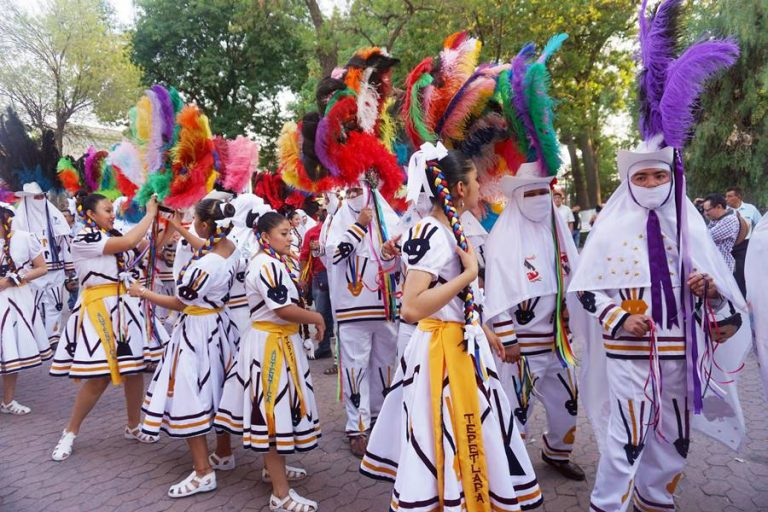
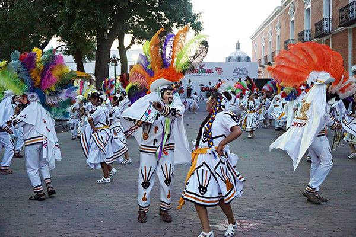
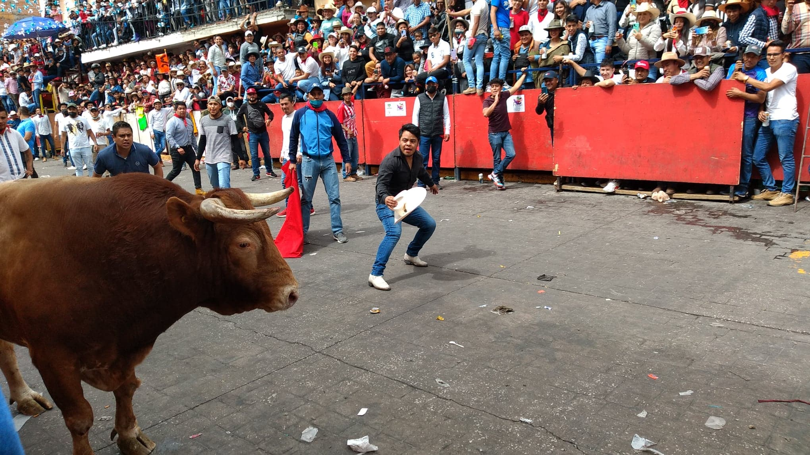
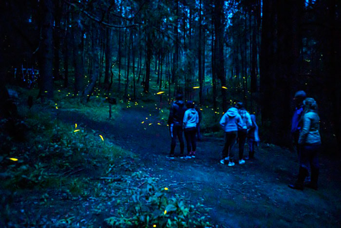

La danza de los Huehues, aunque más relevante en Tlaxcala y Oaxaca, tiene orígenes prehispánicos ligados a la cultura tlaxcalteca. Aunque no existe un consenso oficial, también se dice que podría provenir de la etnia Tenek de San Luis Potosí, mencionándose su origen en Veracruz o la cultura azteca o chichimeca. Esta tradición se originó en el siglo XVII como una burla a la vestimenta de los terratenientes, ya que a la clase trabajadora no se le permitía participar en las celebraciones. La burla enfureció tanto a los líderes que el gobierno incluso prohibió el baile.

La danza de los Huehues, realizada por entre 20 y 40 parejas, era tradicionalmente interpretada por los “Huehues”, quienes llevaban tilmas, máscaras y plumas en la cabeza y se les permitía beber pulque. Jóvenes vestidos con huehues bailan y beben pulque. Las mujeres visten vestidos modernos cuando participan, lo que lo convierte en un evento nuevo. Durante la celebración, los Huehues marchan hacia la plaza de toros acompañados de otros grupos de danzantes. Antiguamente la música se tocaba con violín y guitarra, pero hoy en día se utilizan teclados.

Es una fiesta popular mexicana que se celebra en Huamantla, Tlaxcala, con más de 60 años de tradición. En esta fiesta, los toros de lidia corren sueltos por las calles y la gente corre frenéticamente delante de ellos. La Huamantlada es la versión mexicana de los Encierros de San Fermín en Pamplona, España, pero ha adquirido características propias y se ha convertido en un símbolo de identidad para los tlaxcaltecas.

Notas relevantes:
El estado de Tlaxcala cuenta con "El Santuario de las Luciérnagas" el cual está
úbicado
en el
municipio de Nanacamilpa, Tlaxcala, es el único de su tipo en México y América, y uno de los dos existentes en
el mundo, junto con el de la Isla Norte en Nueva Zelanda. El santuario se encuentra en un bosque de 200
hectáreas y es el hogar de miles de luciérnagas que iluminan la noche con su brillo.
